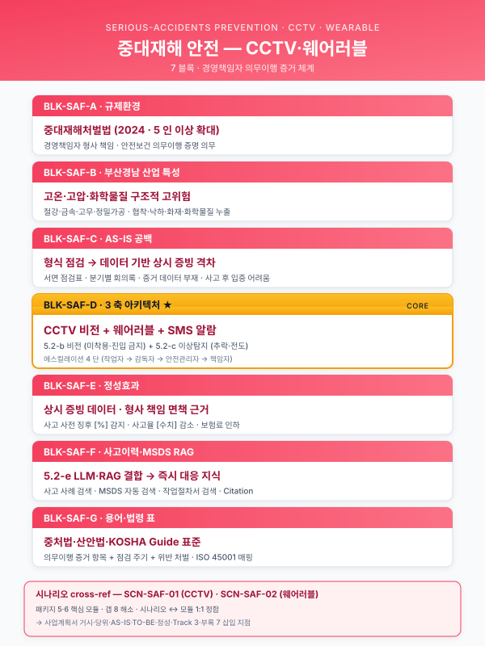
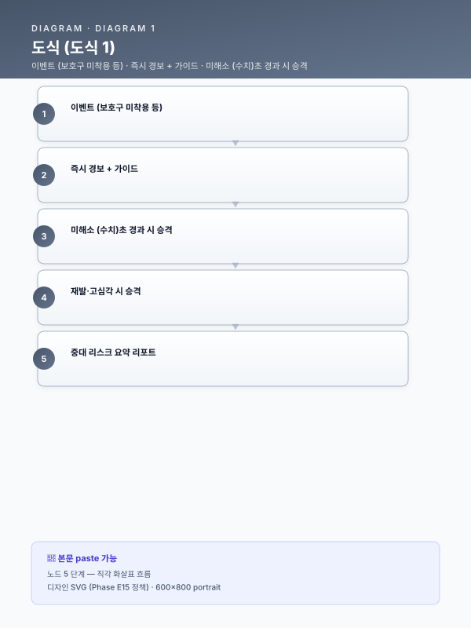

모듈 — 중대재해·산업안전 AI (크로스커팅 재사용 블록)¤
📖 약 18 분 읽기

0. 모듈 목적¤
본 모듈은 Track ½/3 본문 목차와는 별개로, 중대재해처벌법·산업안전보건법·화학물질 규제 대응을 위한 안전 AI 내러티브를 사업계획서의 거시환경·산업 당위성·AS-IS·TO-BE·정성효과·Track 3 연계·부록의 7 개 삽입 지점 에 일관된 톤으로 주입하기 위해 설계된 크로스커팅 재사용 블록 세트 이다. 부산·경남 제조업(철강·금속가공·고무·폴리머·정밀가공)은 고온·고압·중량물·회전기·화학물질 취급 비중이 높아 중대재해 리스크가 구조적으로 누적되는 업종이며, AI 기반 안전 감지·지식화는 단순 사고 예방 도구를 넘어 **경영책임자의 안전보건 확보 의무 이행을 상시로 입증할 수 있는 선제적 증거 체계**로 기능한다. 본 모듈은 여러 고객사·여러 지원사업에 반복 삽입될 수 있도록 업종·공정을 고정하지 않고 플레이스홀더 기반으로 서술되었다.
ℹ️ 페이지 정보 (워크스페이스 메타)
플레이스홀더 범례 — [고객사] 고객사명, [공정] 대상 공정명, [사업장] 사업장 위치(부산·경남 내 시·군), [수치] 수치, [%] 비율, [연도] 연도, [기간] 기간.
규제 수치 관련 주의 — 벌금 상한·형기·시행시기 등은 본문 내 (확인 필요) 태그로 표기하며, 개정 추이에 따라 유지보수 지침(§6)에 따라 갱신한다. 사업계획서 최종본 제출 전 해당 항목을 반드시 법령 원문으로 교차 검증한다.
민감도 주의 — CCTV·웨어러블·생체 신호 활용 블록에는 프라이버시·노사 합의 리스크 완화 문구가 함께 삽입되어야 한다. 해당 주의 조항은 BLK-SAF-C / D / F 각각에 포함되어 있으며, 임의로 삭제하지 않는다.
1. 삽입 지점 맵¤
| 삽입 위치 | 본 모듈 블록 | 분량 |
|---|---|---|
| Track 1 §1.2 거시환경 | BLK-SAF-A 중대재해법·산업안전 규제 환경 | 1 문단 |
| Track 1 §1.3 산업 당위성 | BLK-SAF-B 부산·경남 제조업의 구조적 고위험 특성 | 1 문단 |
| Track 1 §3.4 실시간 운영 공백 | BLK-SAF-C 사전 징후 감지·기록 부재 리스크 | 1~2 문단 |
| Track 1 §4.1~4.3 TO-BE | BLK-SAF-D 안전 AI 아키텍처(CCTV·웨어러블·MSDS RAG 3축) | 2 문단 |
| Track 1 §6.2 정성 기대효과 | BLK-SAF-E 경영책임자 리스크 감소·의무이행 증거 축적 | 1 문단 |
| Track 3 LLM·RAG 본문 | BLK-SAF-F 사고이력·안전매뉴얼·MSDS RAG | 1 문단 |
| 부록 | BLK-SAF-G 안전·규제 용어·법령 인덱스 | 0.5 페이지 |
총 7 개 블록 · 7 개 삽입 지점.
2. 본문 블록 A~G¤
BLK-SAF-A — 중대재해법·산업안전 규제 환경¤
- 용도: Track 1 §1.2(거시환경) 말미에 삽입하여 "왜 지금, 안전까지 포함한 제조 AI인가"의 규제 측 명분을 확립한다.
- 실제 문어체 한국어 초안:
2022년 1월 시행된 중대재해처벌법은 사업장에서 사망·중상해 등 중대산업재해가 발생한 경우 사업주와 경영책임자에게 직접적인 형사책임을 부과할 수 있도록 규정하고 있으며, 2024년 1월 5인 이상 사업장으로의 적용 범위 확대와 관련 판례 누적을 거치며 제조 현장의 안전보건 체계 수준을 사실상 경영 최상위 리스크 로 끌어올렸다. 아울러 산업안전보건법 전부 개정, 화학물질관리법(화관법)·화학물질의 등록 및 평가 등에 관한 법률(화평법)의 지속적 강화, 한국산업안전보건공단(KOSHA) 안전보건경영시스템 등급 공시 확대 등으로 인해, 제조기업의 안전 관리 수준은 더 이상 형식적 점검 서류로 입증될 수 없으며 데이터·로그 기반 상시 증빙 체계 로의 전환이 불가피하다. 본 사업은 이러한 규제 환경에서 생산성·품질뿐 아니라 안전·준법을 동시에 관통하는 제조 AI 체계를 구축함으로써, 규제 대응 비용을 구조적으로 낮추는 것을 목적으로 한다.
- 주요 키워드·수치: 중대재해처벌법([연도] 시행, 이후 확대), 산업안전보건법, 화관법·화평법, KOSHA 안전보건경영시스템 등급, 벌금 상한
[수치]억 원(확인 필요), 형기 상한[수치]년 이하(확인 필요), 적용 사업장 규모 기준[수치]인 이상(확인 필요). - 대체 문구 옵션:
- 규제 리스크 톤을 낮출 경우: "중대재해처벌법 시행 이후 제조 현장의 안전보건 관리는 경영 핵심 의제 로 부상하였고, 데이터 기반 상시 증빙 체계 구축이 산업계 공통 과제로 대두되었다."
- ESG 공시와 연계할 경우: "중대재해처벌법 시행과 ESG 정보공시 의무 확대가 맞물리면서, 제조기업의 안전 관리 수준은 투자자·고객사·규제당국 3자에게 동시에 노출되는 평가 지표로 전환되고 있다."
BLK-SAF-B — 부산·경남 제조업의 구조적 고위험 특성¤
- 용도: Track 1 §1.3(산업 당위성) 말미에 삽입하여 지역·업종 특수성과 중대재해 리스크의 연결을 세운다. 부산·경남 소재 고객사 전용 블록이며, 타 지역 사업 시 업종 표현만 교체하여 사용한다.
- 실제 문어체 한국어 초안:
부산·경남 제조업은 철강·금속가공·고무·폴리머·정밀가공을 중심으로 형성되어 있으며, 공정 특성상 고온 용융·고압 프레스·중량물 취급·회전기 밀집·화학물질 상시 취급 이 결합되는 경우가 많아 중대재해 발생 시 치명도가 높은 업종군에 속한다. 특히 다품종 소량 생산 비중이 커지면서 작업 표준의 변경 빈도가 높아지고, 협력업체·파견 인력과 정규 인력이 동일 작업 구역에서 혼재 근무하는 구조가 일반화되어 있어, 관리감독자 한 명의 시야만으로 위험요소를 실시간 통제하는 것이 원천적으로 어렵다. 이러한 구조적 고위험성은 중대재해처벌법 체계 아래에서 경영책임자 개인의 법적 리스크 상한 을 그대로 밀어올리며, AI 기반 실시간 감지·자동 기록 체계를 도입하지 않고서는 안전보건 확보 의무의 상시 이행을 입증하기 어렵다는 결론에 이르게 한다.
- 주요 키워드·수치: 부산·경남 제조업, 철강·금속가공·고무·폴리머·정밀가공, 고온·고압·중량물·회전기·화학물질, 다품종 소량 생산, 협력업체 혼재 근무, 최근
[기간]해당 업종군 재해율[%](확인 필요), 사망만인율[수치](확인 필요). - 대체 문구 옵션:
- 고무·폴리머 중심 고객사: "배합·혼련·가류·압출 공정은 고온 용융 고분자와 유기용제를 상시 취급하여 화학물질 폭로·화재·열상 위험이 중첩된다."
- 정밀가공 중심 고객사: "고속 회전 주축·고압 절삭유·미세분진이 결합되는 작업 환경은 협착·분진·소음 등 복합 위험요소를 발생시킨다."
- 철강 중심 고객사: "연주·압연·열처리·산세 공정은 고온 금속·산세액·대형 크레인 이동 경로가 겹치는 전형적 고위험 구역이다."
BLK-SAF-C — 사전 징후 감지·기록 부재 리스크 (AS-IS)¤
- 용도: Track 1 §3.4(실시간 운영·의사결정 체계의 공백) 말미 또는 §3.5 직전에 삽입하여, "실시간 운영 공백"을 안전 측면까지 확장한다. 1~2 문단 분량으로 사업 규모에 따라 축약 가능.
- 실제 문어체 한국어 초안:
현재 [고객사] 사업장의 안전 관리 체계는 정기 점검표·순회 점검일지·TBM(Tool Box Meeting) 기록 등 주로 사후 서류 중심 으로 운영되고 있어, 보호구 미착용·위험구역 무단 진입·근로자 건강 이상·유해물질 취급 오류와 같은 사전 징후가 발생 시점에 실시간으로 감지·기록되지 못하는 구조적 공백 을 안고 있다. 재해가 실제로 발생한 이후에야 CCTV 영상과 근로자 진술, 종이 점검일지를 역순으로 짜맞춰 원인을 재구성하는 방식으로는, 중대재해처벌법 체계가 요구하는 "안전보건 확보 의무를 상시 이행하였다"는 증거를 제출하기 어렵다.
아울러 공정 이상과 안전 사고의 인과 연결 데이터 가 축적되지 않는 점도 중대한 리스크 요인이다. 설비 이상 알람, 품질 편차, 작업자 피로 지표, 유해물질 취급 이력이 서로 다른 시스템에 분절되어 저장되어 있어, 동일 원인의 유사 사고가 반복될 때 선제적 패턴 추출이 사실상 불가능하다. 본 AS-IS 구조를 그대로 유지할 경우, [고객사]는 사고 자체의 발생 확률뿐 아니라 사고 이후의 법적·평판 리스크 대응 비용까지 함께 증가시키는 위험에 노출된다. (본 블록에서 CCTV·웨어러블 활용을 언급할 경우, 노사 합의·개인정보 보호 체계가 현 시점에 미비함을 함께 적시하여 후속 TO-BE 블록의 전제 조건으로 활용한다.)
- 주요 키워드·수치: TBM, 순회점검, 종이 점검일지, 보호구 미착용, 위험구역 침입, 낙상, 화학물질 혼합 오류, 최근
[기간]경미재해 건수[수치]건(확인 필요), 아차사고 보고율[%](확인 필요), 사후 원인 규명 평균 소요[기간]. - 대체 문구 옵션:
- 규제 톤을 강조할 경우: "...실시간으로 감지·기록되지 못하는 구조적 공백을 안고 있으며, 이는 그대로 경영책임자의 안전보건 확보 의무 이행 입증 공백으로 전이된다."
- 중소 사업장 축약: "현 체계는 정기 점검표·TBM 기록 중심의 사후 서류 방식이어서, 사전 징후의 실시간 감지·자동 기록이 부재하고 재해 발생 시 인과 재구성에 상당한 시간이 소요된다."
BLK-SAF-D — 안전 AI 아키텍처(CCTV 비전 · 웨어러블 IoT · MSDS RAG 3축)¤
- 용도: Track 1 §4.1 TO-BE 개념도 직후 또는 §4.2 AI 적용 공정(환경/에너지/안전 축)·§4.3 데이터 유형 서술 안쪽에 삽입하여, 본 사업의 TO-BE 안전 AI 아키텍처 전체상을 3축 구조로 제시한다. 2 문단.
- 실제 문어체 한국어 초안:
본 사업의 안전 AI 아키텍처는 CCTV 비전 축 · 웨어러블/출입 IoT 축 · MSDS·매뉴얼 RAG 축 의 3 개 축으로 구성된다. 첫째, 기 설치 CCTV 영상에 Pose Estimation·Action Recognition·객체 검출 모델을 결합하여 보호구(안전모·안전화·장갑·방독 마스크) 미착용, 위험구역(크레인 반경·고온 설비·회전기 근접) 무단 진입, 낙상·협착 등의 이벤트를 실시간으로 감지하고, 설비 PLC 알람·품질 MES 이벤트와 동일한 시계열 축 위에 자동 기록한다. 둘째, 근로자 웨어러블(심박·피부온·가속도)과 출입 태그·가스 검지기 등 IoT 신호를 수집하여 개인 단위 피로·열사병·가스 폭로 위험을 조기 경보로 전환하며, 수집된 신호는 개인을 식별하지 않는 가명·집계 단위로 저장하여 활용한다. 셋째, MSDS·화관법·화평법·안전작업허가서(PTW)·사고이력·KOSHA 가이드를 RAG 기반 지식베이스로 구축하여, 현장 단말·모바일에서 "이 물질과 혼합 가능한가", "본 작업의 법정 보호구 기준은 무엇인가"와 같은 질의에 근거와 함께 즉시 응답한다.
3 개 축은 이벤트 버스·통합 안전 대시보드·알람 에스컬레이션 엔진 을 공유하여 단일 운영 체계를 형성한다. CCTV 비전 이벤트, 웨어러블 경보, RAG 기반 위험성 판정은 모두 동일한 안전 이벤트 스키마로 정규화되어 저장되며, 심각도·지속시간·작업 구역·담당자 조합에 따라 현장 근무자 → 관리감독자 → 안전관리책임자 → 경영책임자까지 자동 에스컬레이션된다. 모든 이벤트와 조치 결과는 원본 영상·로그·문서 출처와 함께 불변 저장되어 중대재해처벌법 체계에서 요구하는 "안전보건 확보 의무 이행" 증거 자산 으로 축적된다. 단, 본 구조는 CCTV 영상·웨어러블 생체 신호를 활용하므로, 사전 노사 협의와 개인정보 영향평가, 가명처리·최소수집·목적 제한 원칙 준수가 도입의 전제 조건이며, 관련 절차는 §[본문 해당 섹션]에서 별도로 정의한다.
- 주요 키워드·수치: Pose Estimation, Action Recognition, 객체 검출, 보호구, 위험구역, 낙상·협착, 웨어러블 심박·피부온·가속도, 출입 태그, 가스 검지, 이벤트 버스, 통합 안전 대시보드, 알람 에스컬레이션, RAG 기반 MSDS·PTW·사고이력, 감지 지연
[수치]초 이내, 이벤트 기록 보존[기간], 허위 경보율[%]이하. - 대체 문구 옵션:
- 단일 축 축약(중소): CCTV 비전 축만 채택하고 웨어러블·RAG은 향후 단계로 명시.
- 화학물질 중심 사업장: MSDS RAG 축을 선두 문장으로 배치하고 CCTV 축은 후순위로 재배열.
- 대기업·그룹사: 그룹 통합 안전관제센터 연계 문구 추가("그룹 안전관제센터 이벤트 버스와 스키마를 정렬하여 그룹 전사 수준의 상시 모니터링으로 확장 가능하다").
BLK-SAF-E — 경영책임자 리스크 감소·의무이행 증거 축적 (정성 기대효과)¤
- 용도: Track 1 §6.2(정성적 기대효과) 안쪽의 "안전 공장" 항목 위치에 삽입하여, 본 사업의 정성 효과를 법적 리스크·거버넌스 언어로 끌어올린다. 1 문단.
- 실제 문어체 한국어 초안:
본 사업을 통해 구축되는 안전 AI 체계는 단순한 사고 건수 감축을 넘어, 보호구 착용·위험구역 준수·유해물질 취급 절차 준수 여부를 상시로 자동 기록 함으로써, 중대재해처벌법 체계에서 경영책임자에게 요구되는 안전보건 확보 의무의 이행 증거 를 시점별·구역별·작업자별로 축적한다. 이는 만일의 사고 발생 시 사후 책임 판단 단계에서 "관리 체계가 형식적으로만 운영되었는가, 실질적으로 작동하고 있었는가"를 입증할 수 있는 객관적 근거로 기능하며, 동시에 KOSHA 안전등급·ESG 정보공시·원청 안전성 평가 등 외부 평가 체계에 대응하는 자료로도 그대로 전용이 가능하다. 결과적으로 [고객사]는 사고 확률 자체의 감소와 사고 이후 법적·평판 리스크의 완화라는 이중 효과 를 확보하게 된다.
- 주요 키워드·수치: 안전보건 확보 의무 이행, 경영책임자 리스크, KOSHA 안전등급, ESG 정보공시, 원청 안전성 평가, 사고 확률 감소
[%](확인 필요), 보호구 미착용 감지 누적[수치]건/월, 자동 기록 이벤트[수치]건/일. - 대체 문구 옵션:
- 수치 기대효과 강화: "보호구 미착용 적발률 [%] 향상, 위험구역 무단 진입 건수 [%] 감소 등 정량 지표와 함께, 경영책임자 의무이행 증거의 상시 축적이라는 거버넌스 효과를 동반한다."
- 보수적 톤: "본 체계는 책임 면탈 수단이 아니라, 의무 이행을 상시로 작동시키고 그 작동 결과를 객관적으로 기록하는 도구로 기능한다."
BLK-SAF-F — 사고이력·안전매뉴얼·MSDS RAG (Track 3 본문)¤
- 용도: Track 3 LLM·RAG 본문의 "안전 지식자산화" 시나리오 섹션에 삽입. SCN-SAF-03 MSDS RAG을 핵심으로 사고이력·작업표준서·KOSHA 가이드를 포괄한다. 1 문단.
- 실제 문어체 한국어 초안:
안전 지식자산화 축에서는 MSDS·화관법·화평법·안전작업허가서(PTW)·사내 사고이력보고서·TBM 회의록·KOSHA 가이드·설비 운전 표준 을 통합 RAG 지식베이스로 구축한다. 문서별 구조(물질명·CAS 번호·유해성 구분·법적 의무·혼합 금기 등)를 인지한 청킹 전략과, 법령 조문·고시·내부 규정 간 출처 계층을 명시하는 메타데이터 설계를 적용하여, 현장 단말·모바일에서 수행되는 질의("본 작업에서 ○○ 물질과 ××를 혼합해도 되는가", "유사 설비에서 과거 발생한 사고와 조치 이력은 무엇인가", "본 작업의 법정 보호구·환기 기준은 무엇인가")에 대해 출처 근거와 함께 즉시 답변 한다. 질의·응답 이력은 개인 식별을 제거한 집계 단위로 저장되어 신규 근로자 교육용 Q&A, 위험성평가 근거, 경영책임자 의무이행 증빙으로 재활용되며, 법령 개정·신규 물질 도입 시에는 지식베이스의 해당 청크만 갱신되어 현장 지식의 시의성 을 상시 유지한다.
- 주요 키워드·수치: MSDS, 화관법, 화평법, PTW(안전작업허가서), 사고이력보고서, TBM, KOSHA 가이드, CAS 번호, 유해성 구분, 혼합 금기, 청킹 전략, 출처 메타데이터, 응답 지연
[수치]초 이내, 근거 인용률[%]이상. - 대체 문구 옵션:
- RAG 기술 상세 강조: 벡터 임베딩·재랭킹·구조화 검색(Structured RAG) 결합 서술 추가.
- 중소 사업장: MSDS·사고이력만으로 범위를 축소하고, PTW·KOSHA 연계는 2단계 확장으로 명시.
BLK-SAF-G — 안전·규제 용어·법령 인덱스 (부록, 약 0.5 페이지)¤
- 용도: 사업계획서 부록에 삽입하여 본문에 등장한 안전·규제 용어·법령을 심사자와 실무자가 일관된 정의로 참조할 수 있도록 한다. 본문 분량을 늘리지 않고 레퍼런스화.
| 약어·용어 | 정의 | 본문 등장 블록 |
|---|---|---|
| 중대재해처벌법 | 사업장 내 사망·중상해 등 중대산업재해 발생 시 경영책임자 등에 형사책임을 부과하도록 한 법률. [연도] 시행. 벌금·형기 수치는 (확인 필요). | A, C, E |
| 산업안전보건법 | 산업재해 예방을 위한 근로자 안전보건 기준·사업주 의무 등을 규정한 기본법. | A, E |
| 화관법 | 화학물질관리법. 유해화학물질의 취급·영업허가·사고대비물질 등을 규율. | A, D, F |
| 화평법 | 화학물질의 등록 및 평가 등에 관한 법률. 신규·기존 화학물질 등록·유해성 평가 의무. | A, D, F |
| MSDS | Material Safety Data Sheet, 화학물질 안전보건자료. | D, F |
| PTW | Permit to Work, 안전작업허가서. 고위험 작업 사전 허가 서식. | D, F |
| TBM | Tool Box Meeting, 작업 투입 직전의 소규모 안전 회의. | C, F |
| KOSHA | 한국산업안전보건공단. 안전보건경영시스템 인증·등급 운영. | A, E, F |
| 안전보건 확보 의무 | 중대재해처벌법상 경영책임자 등이 이행하여야 하는 안전보건 관리체계 구축·운영 의무. | A, C, E |
| Pose Estimation | 영상 내 인체 관절 추정 기법. 행동 인식·낙상 감지에 사용. | D |
| Action Recognition | 영상 시퀀스에서 행동 단위를 분류하는 기법. 보호구·작업 순서 감지에 사용. | D |
| 알람 에스컬레이션 | 심각도·지속시간 기준으로 담당자 단계를 자동 승격하는 경보 체계. | D |
| 이벤트 버스 | 서로 다른 시스템의 이벤트를 동일 스키마로 수집·분배하는 통합 채널. | D |
| 가명처리 | 개인을 식별할 수 없도록 처리하되 통계 목적에 사용 가능하게 하는 기술적 조치. | D, F |
법령 조문 번호·벌금 상한·형기·시행시기·적용 사업장 규모 기준은 사업계획서 최종본 제출 시점에 최신 법령 원문으로 확인한다.
3. 관련 시나리오 매핑¤
| 시나리오 ID | 제목 | 본 모듈 블록 주요 연결 |
|---|---|---|
| SCN-SAF-01 | 중대재해법 대응 위험요소 AI 감지 (CCTV·웨어러블) | BLK-SAF-C(AS-IS), BLK-SAF-D(CCTV·웨어러블 2축), BLK-SAF-E(정성효과) |
| SCN-SAF-03 | 화학물질·MSDS 지능 관리 | BLK-SAF-D(RAG 축), BLK-SAF-F(Track 3 본문) |
| SCN-MET-06 | 조립 라인 작업자 행동 인식·안전 감지 | BLK-SAF-C(AS-IS), BLK-SAF-D(CCTV 축) |
| SCN-SAF-02 | 탄소배출·CBAM (간접 연결) | BLK-SAF-A(규제 환경) 말미 부가 언급만. 주 서술은 module/cbam.md 에 위임 — 본 모듈은 중대재해법·산업안전 축에서만 간접 연결 |
본 모듈은 SCN-SAF-01·03·SCN-MET-06 3 개 시나리오의 안전 측면 공통 서술 을 상류에서 흡수하여, 개별 시나리오 카드에서는 기술 구조·데이터 소스·기대효과 서술에 집중할 수 있도록 역할을 분담한다.
4. 삽화·도식 후보¤
| 도식 ID | 제목 | 용도·배치 | 포맷 |
|---|---|---|---|
| FIG-SAF-1 | 위험구역 평면 배치도 | 공장 평면도 위에 크레인 반경·고온 설비·회전기·화학물질 보관 구역을 색상별로 표시. BLK-SAF-D 앞 표지 삽화. | 2D 평면 다이어그램 |
| FIG-SAF-2 | CCTV·웨어러블·게이트 통합 감지 커버리지 | 동일 평면도에 카메라 FOV, 웨어러블 착용 인원 동선, 출입 게이트 포인트 중첩. BLK-SAF-D 본문. | 2D 평면 + 아이콘 |
| FIG-SAF-3 | 알람 에스컬레이션 시퀀스 다이어그램 | 현장 근무자 → 관리감독자 → 안전관리책임자 → 경영책임자의 단계 승격, 각 단계 소요시간·조치 SLA 표기. BLK-SAF-D / BLK-SAF-E. | Mermaid sequenceDiagram |
| FIG-SAF-4 | 안전 이벤트 통합 스키마 | CCTV 비전 이벤트·웨어러블 경보·RAG 판정을 단일 스키마로 정규화하는 매핑 표. BLK-SAF-D. | 표 |
| FIG-SAF-5 | MSDS RAG 질의·응답 대화 예시 | "이 물질과 혼합 가능한가" 유형 Q&A 2~3 건, 각 응답에 법령 조문·MSDS 섹션 출처 링크 병기. BLK-SAF-F. | 대화형 목업 |
| FIG-SAF-6 | 안전보건 확보 의무 이행 증거 축적 타임라인 | 이벤트 발생 → 자동 기록 → 조치 → 불변 저장 → 평가·감사 활용까지의 흐름. BLK-SAF-E. | 수평 타임라인 |
| FIG-SAF-7 | 안전 AI 3축 아키텍처 개념도 | CCTV 비전 · 웨어러블 IoT · MSDS RAG 3축이 공통 이벤트 버스·대시보드로 수렴하는 구조. BLK-SAF-D 대표 삽화. | 블록 다이어그램 |
Mermaid 스니펫 예시 (FIG-SAF-3 알람 에스컬레이션):

¤5. 유지보수 지침¤
- 법령 개정 추적 주기 — 분기 1 회, 국가법령정보센터 기준으로 중대재해처벌법·산업안전보건법·화관법·화평법 개정 여부를 확인하고, 본 모듈 내
(확인 필요)태그 항목을 일괄 갱신한다. 개정 반영 시 블록별 "최종 갱신일"을 본문 하단에 부기하는 것을 원칙으로 한다(본 버전은 최초 작성). - 수치 플레이스홀더 관리 —
[수치],[%],[연도],[기간]은 사업계획서 조립 시점에 고객사 실제 값·최신 법령 값으로 일괄 치환한다. 조립 스크립트에서 미치환 플레이스홀더가 남아 있으면 제출 금지 플래그를 띄우도록 한다. (확인 필요)태그 운영 — 본 모듈 내(확인 필요)로 표기된 항목은 법령 원문 또는 공식 통계 출처로 교차 검증 전에는 사업계획서 본문에 그대로 노출하지 않는다. 검증 완료 시 태그를 제거한다.- 블록 재사용 로그 — 어떤 사업계획서에 어떤 블록이 삽입되었는지
meta/worklog.md에 누적 기록하여, 향후 심사 피드백에 따른 문구 개정이 일괄 역추적 가능하도록 한다. - 프라이버시·노사 합의 주의 문구 고정 — BLK-SAF-C / D / F 내 프라이버시·노사 협의 관련 주의 문구는 모듈 유지보수의 잠금 문구(lock phrase) 로 지정하며, 심사자 요청 없이는 임의 삭제하지 않는다.
- 시나리오 카탈로그 동기화 — SCN-SAF-01·02·03 및 SCN-MET-06 카드 변경 시 본 모듈의 §3 매핑 표와 §2 블록 서술을 대조·갱신한다.
6. 확인 필요 항목¤
본 모듈 최종 삽입 전 반드시 법령 원문·공식 통계로 교차 검증이 필요한 항목:
중대재해처벌법 시행 연도 — 2022년 1월 시행 확정, 2024년 1월 5인 이상 사업장 확대 확정. 본 항목은 해소됨.- 중대재해처벌법상 벌금 상한
[수치]억 원— 사업주·경영책임자·법인 각각 구분되며 항목별 상한이 다름. (확인 필요) - 중대재해처벌법상 형기 상한
[수치]년 이하 징역— 사망·중상해 등 구분별 상한. (확인 필요) - 적용 사업장 규모 기준
[수치]인 이상— 시행 초기와 확대 이후 기준이 다름. 현 시점 적용 기준 재확인. (확인 필요) - 산업안전보건법 최근 개정 시행일 — 본문 "전부 개정" 표현 사용 여부 결정 전 확인. (확인 필요)
- KOSHA 안전보건경영시스템 등급 체계 최신 구분 — 등급명·공시 범위 변동 여부. (확인 필요)
- 부산·경남 해당 업종군 재해율·사망만인율
[%]/[수치]— 최신 산업재해 통계 기준. (확인 필요) - 화관법·화평법 최근 개정 내용 중 신규 물질 등록 의무 기준 — MSDS RAG 지식베이스 범위 정의에 영향. (확인 필요)
- 개인정보 보호법·근로자 영상정보 수집 관련 가이드라인 최신본 — CCTV·웨어러블 도입 전제 조건 기술 시 근거. (확인 필요)
- CBAM 본격 시행 시기·제품 범위 갱신 — BLK-SAF-A 말미 ESG 연계 문구 사용 시 근거. (확인 필요)
총 (확인 필요) 태그 10 개.
7. 버전¤
- v0.1 (최초 작성) — 7 블록·7 삽입지점·10 확인 항목 기준 초안. 이후 법령 수치 확정·고객사 시나리오 확정에 따라 v0.x 증분 갱신 예정.
📌 이 페이지 정보 (개발자용)
- 원본 파일:
모듈_중대재해_안전.md - 자산 군: 🧩 Cross-cutting 모듈
- slug 경로:
module/safety.md - 워크스페이스 정책: 원본 .md 수정 0 — hooks 로만 시각 변환
- 자산 자족성 정상화: Phase E7 완료 (잔여 외부 갭 4)